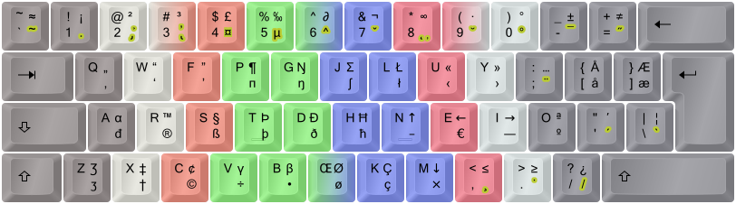

Colemak - Edition DreymaR!

To me, it's the letter block that's the true masterstroke of Colemak and, as it were, Colemak per se:
- The Caps-to-Backspace is a good idea but that can be used with other layouts too! Or substituted for, e.g., an Extend layer; much as the wide/angle ergonomic mods are nice for some users and they don't make a Colemak layout a non-Colemak layout!
- The symbol key mappings may be kept like in the US layout (which I personally recommend) like the default Colemak layout does, or not if that floats your boat. All good so far.
- When it comes to level 3-4 of the layout (AltGr mappings) they don't do it for me! I look in horror at the "tilde mappings" of missed opportunities, and many letters are in unintuitive places.
I want more. I want to
- use dead key accents that mostly conform to the Compose sequences in Linux because they make a lot of sense
- improve on a few of them; e.g., typing " to compose umlaut is über-silly - it's a very common accent and shouldn't require a Shift!
- be able to type the accent characters `~^ directly as in the normal layout; the dead keys should be on additional AltGr mappings
- keep the letter keys free of dead keys for consistency/clarity and to keep from triggering them while typing normally
- have useful special non-accent letters and symbols (e.g., æ œ ß ð þ ŋ ʒ ° † © …) readily available on AltGr mappings
- make mappings easy to remember based on similarity to existing letters/symbols, or failing that, shape/position
- use my locale special letters (in my case, øåæ in decreasing order of importance) easily without breaking the main Colemak setup
Above and below you can see images of my proposed mappings!
I added a few of the most needed Greek letters (the first ones, π and µ), and some symbol mappings should be familiar to Macintosh users but I've considered how useful and common different symbols really are. It's not a full latin-script layout as it stands; for that I'll need more layers and I haven't yet gotten around to that. I'd like to eventually have the most common IPA phonetic symbols available for instance, like the Neo layout has. I have some nifty ideas.
Some latin letters are really very uncommon or even deprecated, like the Kra which was discontinued in 1973. Keep in mind that the three key locations I've used for øåæ are up for grabs for people who need their own characters (ø and å are also available as dead key combinations with the slash and ring accents respectively – although the slash dead key doesn't always work as expected under Linux). This and a few AltGr mappings should ideally be the only modifications necessary to produce a slew of different nationalized layouts! (See my Locale topic.)
The Greek letters could have their own layer so that the whole Greek alphabet would be accessible – or it can be done simply by layout switching to a phonetic Greek Colemak layout. Greek is much more commonly needed for symbols and short quotes than the other non-latin scripts are, so having a Greek dead key also makes sense for that purpose.
In the future, I may want extra overlay/extend layers like the one I already have with navigation/editing and numeric keypad. I may want the CapsLock key with modifiers to select those. There should also be a few more dead keys in addition to accents, currency and math/science; maybe for ligatures, latin scripts (such as the many African ones), and IPA phonetics.
UPDATES
Spoiler:
UPDATE 2012-07-08:
- Some Greek gave way to provide a set of arrows (←↑↓→) and the en/em dashes on NEI. The important β µ π were kept.
- The ‹›«» quote marks are on the same fingers as the <> keys for consistency. The ‚‘’„“” quotes are near the 2 key which holds the " in some layouts.
- Most signs have intuitive positions I feel (based on sound like Ʒʒ Ŋŋ, or shape like many symbols), and some related keys are next to each other.
- For the "fluid" keys (mainly HJKL, VB and the brackets) I settled on some Greek and IPA signs in this version.
UPDATE 2012-07-26:
I think the IPA signs I tried to get into the previous version are too odd for some users and that'll confuse them. Also, more keys are needed to get even a simple English IPA up and running. That'll come later, with the addition of new dead keys I'm planning. So I reinstated some Greek and latin letters.
Incidentally, this version is more similar to the standard Colemak! :)
The first Greek letters are commonly used for describing α/β/γ radiation, β versions of software and such. So I've let them supplement the π and µ. Of course, other Greek letters are needed too (theta/phi/psi for angles, nu/omega for speeds, Omega for resistance; the list goes on and on) and that can't quite be helped. So I keep the full Greek phonetic Colemak as a separate map layer and switch to it as needed (in Linux/xkb, you can define a key for switching to the last layout group temporarily!).
I brought back superscript 2 and 3 on the 2 and 3 keys. They're quite commonly needed, more than superscript 1 (which must go since the 1 key is full). They should also be available on a dead key together with a more complete set of superscripts! But having those two available more easily makes sense.
The 4 key gets the sterling/pound sign. The generic currency sign will eventually be a currency++ dead key! The Yen sign is missing in action right now, but the dead key will take care of that (my PKL file already has one, but it's not in my xkb files yet).
On the apostrophe key is now a single prime symbol. It's used for music, maths and other things. Its double/triple/etc siblings are missing, pending a maths/science dead key.
The c-cedilla is so much used in the Romance languages that I think it deserves a "direct" AltGr mapping on the phonetically related K key. This key is still one of the "up for grabs" keys for locale layouts since you can also type a ç with the dead key (AltGr+comma then c).
The L-stroke is quite nice to have around too, for Polish and Sápmi languages for instance. The stroke dead key is another path to it, but that's broken right now in Linux/xkb? Hopefully it'll get fixed soon. Other languages need other stroked letters like Ŧŧ and Đđ (different from Ðð!).
Esh is moved to the phonetically and geometrically intuitive J key. The H key is pretty much "up for grabs" but it holds schwa and epsilon which can be useful in some cases.
The keys I recommend using for variants are primarily K H L and J, in that order. They're quite easily reached with the AltGr key (except J which is a stretch) and bunched nicely together.
UPDATE 2014-01-20:
- Again, a minor tweak. As mentioned, I found myself needing the bullet glyph a lot and the Greek β very rarely.
- Also, I've been using the ÷× signs but hardly ever the Greek γ or even µ (although I know that's useful).
So, I switched AltGr and AltGr+Shift positions for the H V B M keys, bringing the Greek a little more to the background. The ε and ə didn't have to swap places but I did it because it seems more consistent. The π is still on unshifted AltGr+p and αδ are on the same key as before, so it's not entirely consistent no matter what – but given how rarely these oddball Greek letters are needed (by me at least) it's okay. Again, you can always keep a proper Greek layout handy; the phonetic Colemak layouts are like add-on mapping layers really.
UPDATE 2014-10-26
- € added on the E key in response to popular demand
- ↓ moved to the M key for shift layer consistency with the other arrows
- the "orphan" schwa/epsilon on the "up-for-grabs" H key replaced by Ħħ (more consistent)
- Win/PKL: µ on the 5 key as a Greek dead key; AltGr+'=' doubles as doubleacute+math/science dead key; other dead key additions
UPDATE 2018-02-22
- Ææ now on the ]} key for consistency with Åå and Øø (from the Norwegian/Danish layout)
- ↑ moved to the N key so that NM form an ↑↓ pair which is nice with or without the Curl(DH) mod
As also seen in my Big Bag Of Tricks Topic and above, this is the current state of Colemak[eD]:
Fig.: The Colemak [edition DreymaR] layout, using different lv3-4 mappings from the standard Colemak.
Shown with the ZXCVB_ Angle-ISO ergonomic mod (see my sig topic), dead key emphasis and color-coded proposed fingering.

Fig.: Colemak [edition DreymaR] with the ISO Curl(DH)AngleWide ergonomic mods – a.k.a. Colemak-CAW[eD] (see my sig topic).
As you can see many parts of the setup are intuitive. Among the fuzzier points are the J L K H and bracket keys, which I consider "up for grabs" when making locale layouts so I can't keep anything terribly important there. I've settled on some Greek and signs that are available otherwise; for proper Greek typing you'll need a full layout anyway – I recommend a phonetic layout accessible by switch key. For hit-and-run Greek symbols there's now a Greek dead key on AltGr+5 (Windows/PKL only for now).